Chiếc áo bạn mặc hôm nay đã đi bao xa?
Khám phá ↓Áo nơ Coquette giá 300.000đ có thể “hết thời” sau vài tháng dù vải còn mới tinh. Vậy một chiếc áo đi qua những đâu trước khi đến tủ đồ của bạn?
Chọn một loại sợi để xem cả ưu lẫn nhược điểm. Một chất liệu “xanh” vẫn có giới hạn.
Mức độ (chấm hồng) mang tính tham khảo để so sánh, tùy cách dệt và xử lý của từng nhà sản xuất. Bạn nên kiểm tra nhãn mác và hỏi nơi bán.
Năm việc nhỏ, ai cũng làm được. Không cần hoàn hảo, chỉ cần bắt đầu.
Hỏi “mình sẽ mặc ít nhất 30 lần chứ?” trước khi thanh toán.
Giặt nhẹ, phơi đúng cách. Thử thách 30 ngày mặc lại, không mua mới.
Đứt chỉ, tuột nút, rộng eo: tiệm sửa đồ rẻ hơn mua mới.
Đổi đồ với bạn bè, đi chợ đồ cũ, tổ chức swap party ở lớp.
Nhãn “xanh” mà không nói rõ chất liệu, nguồn gốc, chứng nhận thì nên nghi ngờ.
Thị trường đang đổi: nhiều thương hiệu nội địa có tên tuổi đã đóng cửa sau hơn 10 năm. Bài học chung được nhắc lại là khó tồn tại nếu không có sự khác biệt.
Tổng công ty 28 theo đuổi chuỗi khép kín từ dệt, nhuộm đến may, và thương hiệu nam Belluni (2011) đưa sợi tre (2015) và sợi sen (2019) vào áo công sở.
Thông tin lấy từ đề án nghiên cứu và phỏng vấn lãnh đạo X28. Đây chỉ là một ví dụ, không phải quảng cáo hay xếp hạng. Còn nhiều thương hiệu và làng nghề khác đáng tìm hiểu.
5 câu, chưa đến 1 phút.
Đăng outfit tái sử dụng của bạn với hashtag #MacLaiMacVui (tên gợi ý, bạn có thể đổi). Bài hay sẽ được chọn lên đây.
Những từ bạn sẽ gặp khi đọc về thời trang bền vững.
Ba tiêu chí đánh giá doanh nghiệp: môi trường, xã hội và quản trị.
Cơ chế điều chỉnh biên giới carbon của Liên minh châu Âu: hàng nhập khẩu phải tính đến lượng khí thải carbon tạo ra khi sản xuất.
Tiêu chuẩn dệt may hữu cơ toàn cầu, đánh giá từ nguyên liệu đến quy trình sản xuất.
Chứng nhận kiểm tra sản phẩm dệt may không chứa các chất độc hại vượt mức cho phép.
Quảng bá là “xanh” nhưng thực tế không có bằng chứng hoặc chỉ làm hình thức.
Biến đồ cũ hoặc vải thừa thành sản phẩm mới có giá trị hơn.